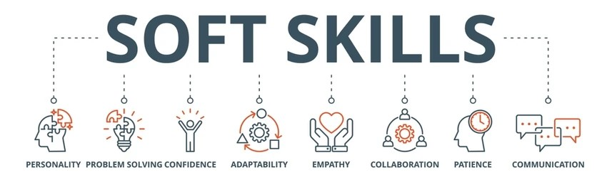

My Skills and Tools Knowledge:

- SQL, MySQL, MS SQL Server:
Strong working knowledge of writing complex queries, joining multiple tables, using subqueries, window functions, and aggregate operations. Comfortable with both MySQL and Microsoft SQL Server environments. Regularly use SQL to extract, clean, and analyze data in real-world projects
- Microsoft Excel:
Highly proficient in using Excel for data cleaning, analysis, and visualization. Skilled with formulas, pivot tables, charts, and conditional formatting. Often use Excel as a go-to tool for quick insights and structured reporting
- Power BI:
Experienced in building interactive dashboards and reports using Power BI. Strong understanding of DAX functions, data modeling, and visual storytelling. Able to connect multiple data sources and design visuals that drive business insights.
- Python & Pandas (Basic to Intermediate):
Working knowledge of Python for data analysis and scripting. Have used Pandas for basic data cleaning, transformation, and exploratory data analysis in self-initiated projects.
- Tableau (Beginner to Intermediate):
Familiar with building visualizations and dashboards in Tableau. Hands-on experience through guided and personal projects. Comfortable with basic charting, filters, and data storytelling.
- Microsoft Azure Fundamentals (Foundational Knowledge):
Completed foundational learning and have a good understanding of cloud concepts, Azure services, and how they relate to data storage and processing.
- Amazon Web Services (AWS) (Foundational Knowledge):
Basic understanding of core AWS services, including S3 and EC2. Aware of how cloud platforms support scalable data solutions
- Data Cleaning & Preprocessing:
Comfortable with cleaning and preparing data using tools like SQL, Excel, and Pandas. Familiar with handling missing values, removing duplicates, and transforming raw data into usable formats.
- Data Visualization:
Skilled in presenting data clearly through charts, dashboards, and reports using tools like Power BI, Excel, and Tableau
- HTML & CSS:
Basic knowledge of HTML and CSS. Able to design and edit simple, responsive web pages—useful for portfolio creation and embedding visual content.
- Time Management:
Capable of managing multiple tasks and deadlines efficiently, especially during self-paced project work or learning new tools.
- Problem Solving & Communication:
Able to identify patterns in data, draw insights, and explain findings in a simple, clear manner. Comfortable working independently and presenting data-backed conclusions.